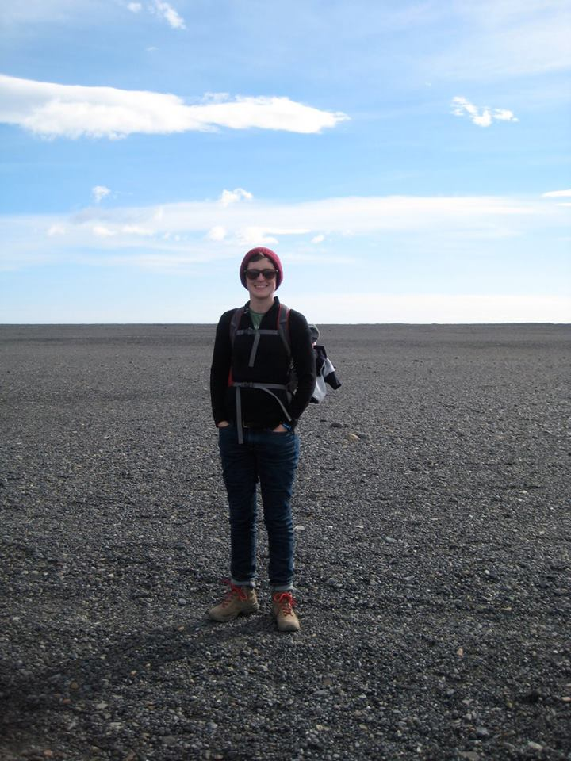

About Me
After graduating from Vassar College with a B.A. in 2011, I spent time working as a clinical research coordinator, a cook, a rock climbing instructor, and an English teacher in Thailand. Upon my return from Southeast Asia, I completed a M.S. in Earth Sciences from the University of Minnesota in 2017. During my research, I created and implemented Python programs to streamline data reduction processes and improve data visualization, and found I loved coding! In 2017 I enrolled in the University of Minnesota's Coding Bootcamp, and aim to transition into a career in full stack development.
When not working, I am an avid biker, yoga enthusiast, and dog lover. While this love is mostly spent on my own fur baby, an Australian Cattle Dog, there's more than enough to go around. Additionally, I am a part of an Appalachian clogging group called Pomp and Circumstomp. Check us out on Facebook!